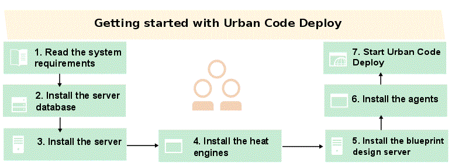
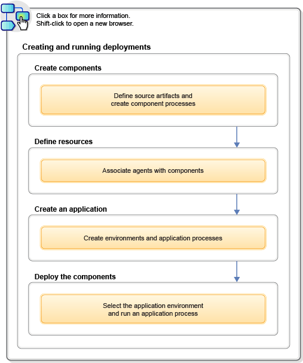

Getting started with HCL UrbanCode Deploy
Quickly become productive with HCL® UrbanCode™ Deploy by following these steps.
The following diagram outlines the steps that are required to get started with HCL UrbanCode Deploy.
Note: If your application runs on the z/OS platform, certain consideration must be made in addition or in place of the basic instructions referenced in the diagram below. Instructions specific to z/OS applications are found in the z/OS Considerations topics.

The following diagram outlines the minimum steps that are required to create and run a deployment. Each box describes a core activity and, taken together, they illustrate the product's primary function. The fastest way to become productive is to work through these steps and understand what each does and how each interrelates with the others.
These steps assume that you have a system installed and configured. See Installing HCL UrbanCode Deploy.
From the Welcome page, you can work through a wizard that shows you the basic steps to deploying artifacts with HCL UrbanCode Deploy. Click the Welcome tab, and then click Let's creat an application. The wizard guides you step-by-step and provides brief explanations of the entire process for creating a deployment. If you do not see the Welcome tab, click the help menu icon that is located in the upper-right corner of the window. Then, click Welcome. See Setting up the wizard for new users for configuration information.

Parent topic: Overview